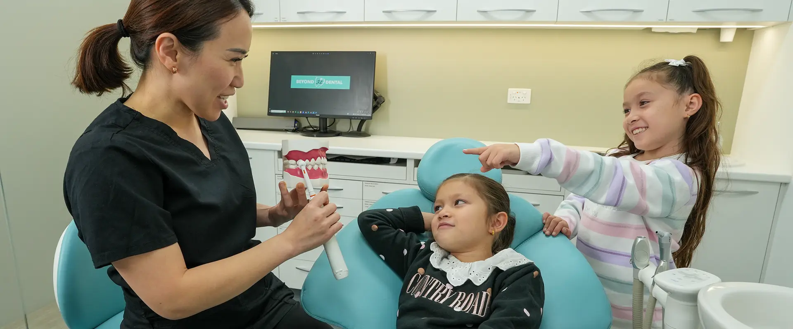
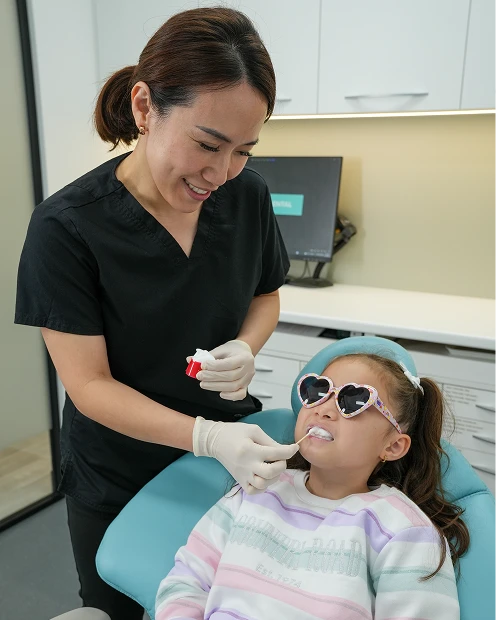

Early interceptive orthodontics
At Beyond 32 Dental, our child-friendly team strives to give your child a positive dental experience by making visits both interactive and fun.

 5.0 from 360+ Google reviews
5.0 from 360+ Google reviews
Prevention is better than cure
That’s why we recommend children visit us for regular 6-monthly check-ups from as early as 2 years of age.
Not only will this help foster a positive attitude towards coming to the dentist, regular attendance will help your child develop good oral hygiene habits that they can continue into adulthood.
Orthodontics means moving teeth. But what’s more important is the jaws, the foundation of all teeth.
Why? If the position, shape and size of the jaw is wrong, it will not only cause crooked teeth, but also have a significant adverse effect on the airway and jaw joints.
- Crooked teeth
- The airway
- The jaw joints
Signs that can come with an obstructed airway
It is not uncommon to find kids (or even adults!) with an obstructed airway who experience excessive daytime sleepiness, poor concentration, decreased learning ability, bed wetting, and the list goes on.
- Excessive daytime sleepiness
- Poor concentration
- Decreased learning ability
- Bed wetting
When to bring them in
We encourage all parents to bring their kids to our surgery as early as possible, to identify any functional problems that affect jaw development.
- 2 yrsFirst check-ups
Regular 6-monthly check-ups, from as early as 2 years of age.
- 7 yrsThe golden time
Age 7 is the golden time for an orthodontic assessment.
- BeforeThe growth spurt
If treatment is required and started before the growth spurt, we can guide jaw development with oral appliances.
- LaterStraightening, made easier
That makes teeth straightening (if required) much easier later down the track.

The days of “wait till all the adult teeth come out” are over!
Call us on (02) 9158 6334 for further information. For a professional and friendly dental experience, book an appointment today.
Straightening options for later on
For older children, teens and adults, these are the ways we straighten teeth.
The information on this page is general in nature and is not a substitute for an examination. Any surgical or invasive procedure carries risks. Before proceeding, you should seek a second opinion from an appropriately qualified health practitioner.